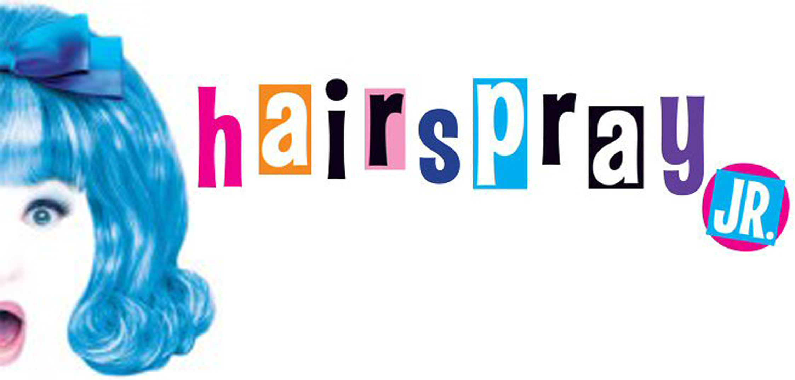
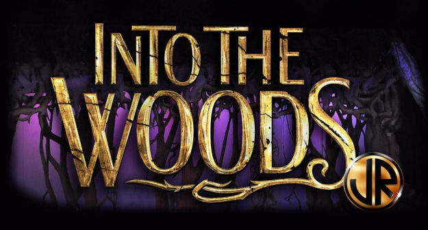

My journey in theater started at Queens College Summer Camp. Every summer for 4 years I performed in two shows, one in July and one in August.We would do junior versions of shows that were on broadway. Here is a list of shows that I have been during my time at this camp:
 I also participated in this program called the All-in All-City theater ensemble. We were the first people to be apart of this group as it was just founded in 2018. I was recommended by my teacher to audtion for the program. More than 50 children all over NYC auditioned but only 30 students got in. We created our orignal musical called NEXT STOP and performed at the Shubert Foundation High School Theater festival. Our final performance was at the FIAF theater in upper manhattan.The link below shows a video of our journey.All-in Ensmble Documentary